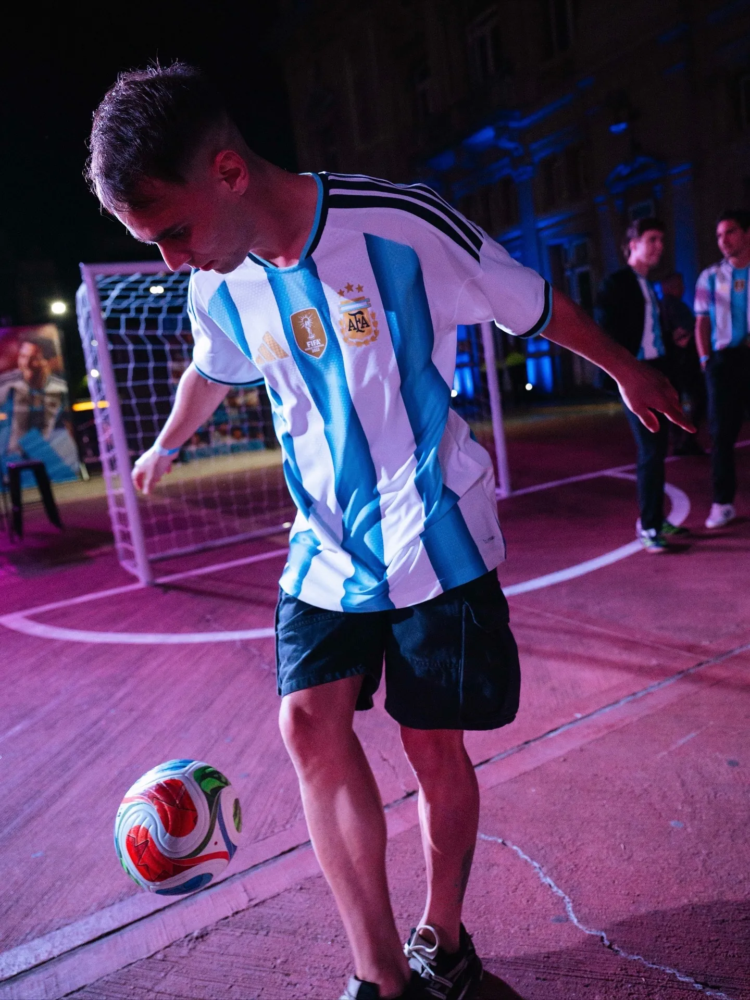
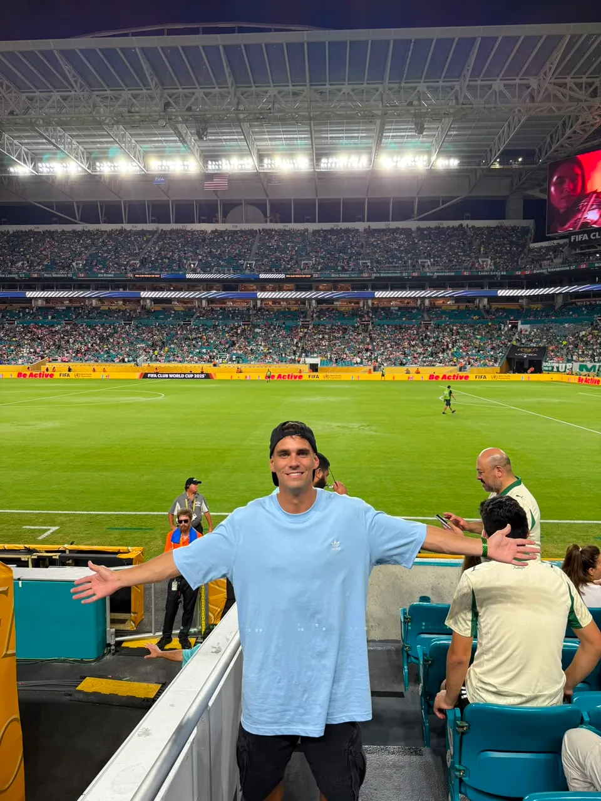

> 03 / MODO MUNDIAL
MODO

MODO
MUNDIAL.
Durante el Mundial, Un Tiro al Arco va a estar presente en Estados Unidos, generando contenidos con el público en los espacios donde la pasión se vive en tiempo real.
Fan zones, puntos de encuentro, estadios y alrededores de los partidos: UTAA va a capturar la energía de la gente, las reacciones espontáneas y el pulso de la hinchada argentina en primera persona.

ACTIVACIÓN EN CALLE
Desafíos, interacción y contenido en espacios de circulación real.
PREVIAS MUNDIALISTAS
Encuentros con hinchas, cábalas, pronósticos y reacciones antes de cada partido.

EXPERIENCIA EN ESTADIO
Contenido desde la tribuna y el entorno del partido, capturando la emoción de los hinchas, el clima del estadio y los momentos clave antes, durante y después del encuentro.